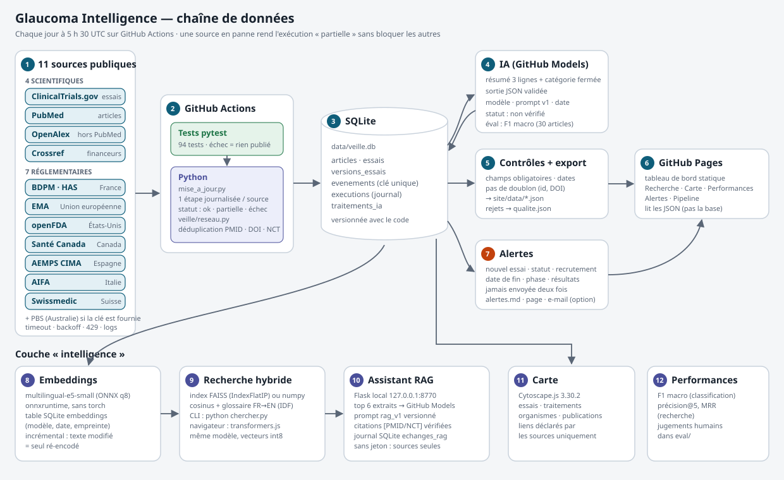

Comment ça marche
La partie technique, pour le jury : chaque matin, un programme Python sur GitHub Actions interroge 11 sources publiques (4 scientifiques, 7 réglementaires), range tout dans une base SQLite, contrôle la qualité, fait analyser les textes par une IA traçable, puis publie ce site. Tout est journalisé et mesuré.

1. Les données : la base SQLite
Nombre de lignes de chaque table. Une publication vue par plusieurs sources n'est enregistrée qu'une fois (clés PMID, DOI, NCT).
2. Les contrôles qualité avant publication
3. Les performances mesurées
Calculées sur des jeux jugés à la main : 30 publications pour la classification, 10 questions × 5 résultats pour la recherche. Tant que les jugements ne sont pas faits, aucun chiffre n'est affiché.
4. Le journal des exécutions
Une ligne par source et par passage. Si une source est en panne, l'exécution est « partielle » et les autres continuent.